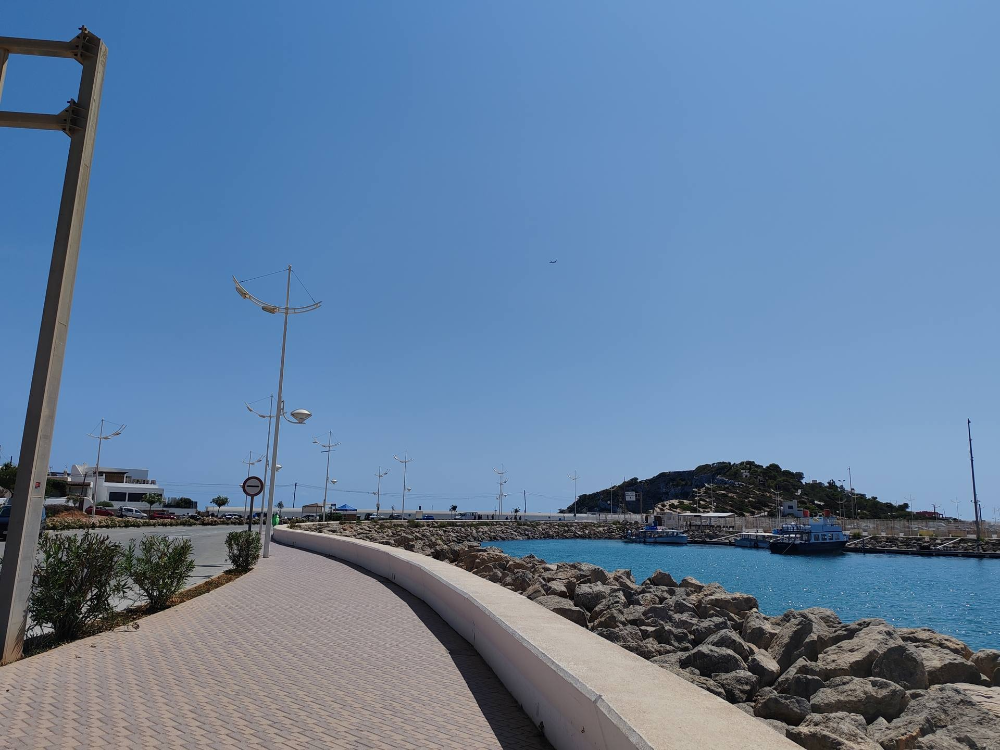
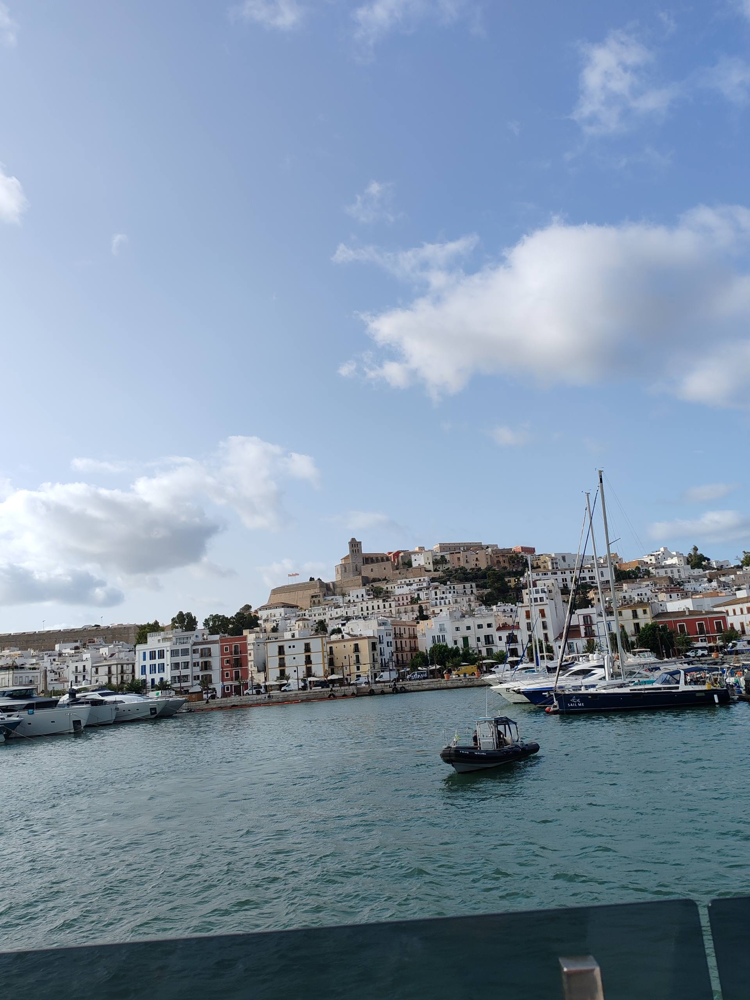
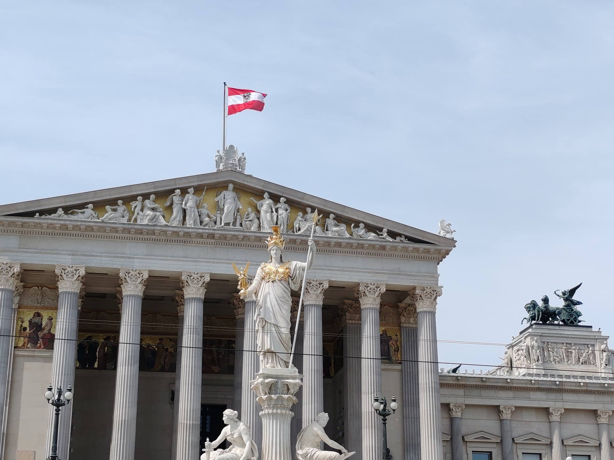
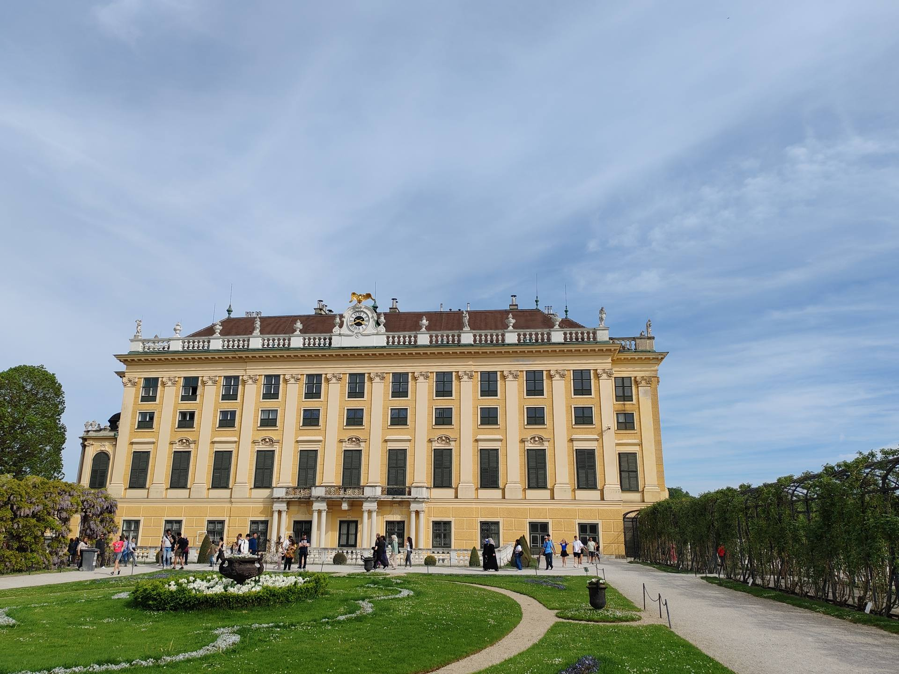
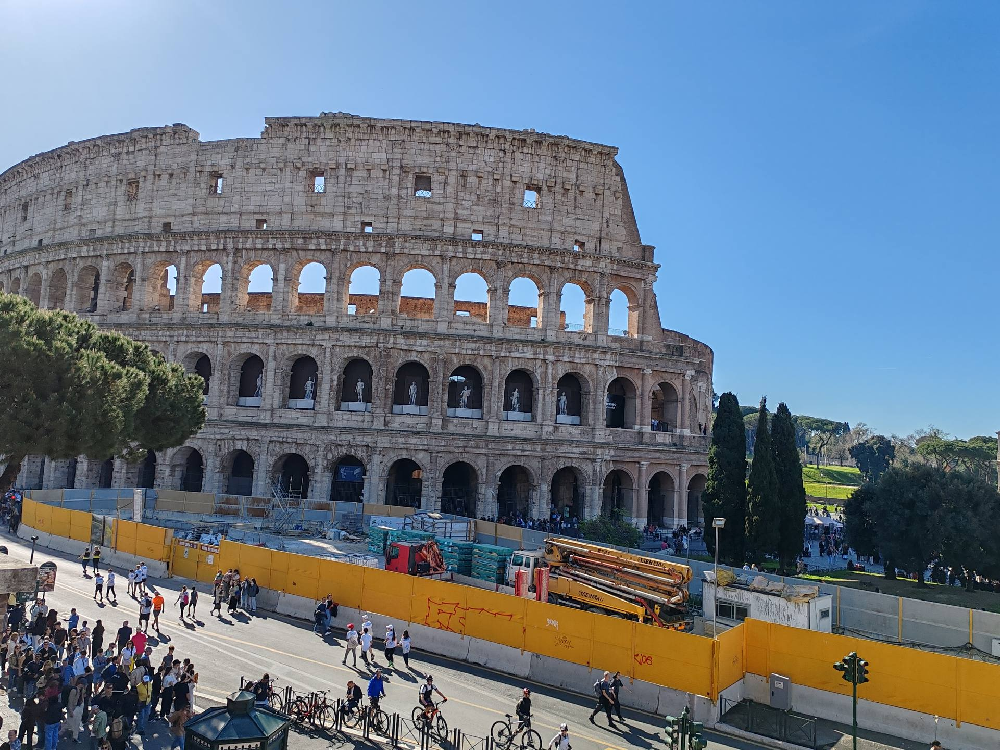

Mes Voyages
J'ai visité 17 pays sur 3 continents. Voici quelques-unes de mes destinations préférées.

Port d'Ibiza
J'ai visité le magnifique port d'Ibiza et ses paysages côtiers enchanteurs.

Le Centre Historique
Exploration du centre historique d'Ibiza avec ses ruelles pittoresques et son charme authentique.

Parlement de Vienne
Architecture impressionnante du Parlement autrichien, symbole de la beauté viennoise.

Château de Schönbrunn
Visite du majestueux château de Schönbrunn et de ses magnifiques jardins.

Rome - Ville Éternelle
Découverte des monuments historiques et de la richesse culturelle de Rome.
Passionné par les Voyages
Mes voyages m'ont permis d'élargir mes horizons, de découvrir différentes cultures et de créer des souvenirs inoubliables sur 3 continents.